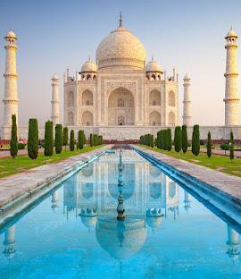
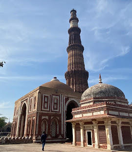
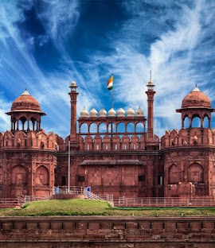

| Place | Description | Image |
| Taj Mahal |
The Taj Mahal stands as a pinnacle of Mughal architecture, renowned globally for its flawless symmetry, grand scale, and emotional origin. Commissioned in 1631 by Emperor Shah Jahan to honor his favorite wife, Mumtaz Mahal, this ivory-white marble mausoleum took over twenty years and thousands of artisans to complete. Its central structure features a massive, onion-shaped dome flanked by four soaring minarets, all constructed from translucent Makrana marble that dramatically shifts in hue under different lights of the day. The exterior and interior are intricately adorned with pietra dura—exquisite floral inlays composed of semi-precious stones—and sweeping Arabic calligraphy of Quranic verses. Set within a perfectly balanced charbagh (Persian garden) and framed by two identical red sandstone buildings, the entire complex is engineered so that its reflection shimmers continuously along the central reflecting pool, embodying a timeless symbol of love and artistic devotion. |
 |
| Qutub Minar |
The Qutb Minar, also spelled Qutub Minar and Qutab Minar, is a minaret and victory tower, built during the Delhi sultanate, and comprising the Qutb complex, a UNESCO World Heritage Site in Mehrauli, South Delhi, India.[3][4] It was mostly built between 1199 and 1220, contains 399 steps, and is one of the most frequented heritage spots in the city.[5][6][3] After defeating Prithviraj Chauhan, the last Hindu ruler of Delhi before the Ghurid conquest of the region,[7][8] Qutab-ud-din Aibak initiated the construction of the victory tower, but only managed to finish the first level. |
 |
| Red Fort |
The Red Fort (Lal Qila in Hindi; Hindi pronunciation: [laːl 'qɪlaː]) is a historic Mughal fort located in the Old Delhi area of Delhi, India. Serving as the main residence of the Mughal emperors, it was commissioned by Emperor Shah Jahan on the 12th of May 1639; the fort was constructed following his decision to shift the Mughal capital from Agra to Delhi. Originally adorned in red and white, the fort's design is attributed to Ustad Ahmad Lahori, the architect of the Taj Mahal. The Red Fort is a prominent example of Mughal architecture from Shah Jahan's reign, combining Persian and Indian architectural styles. |
 |